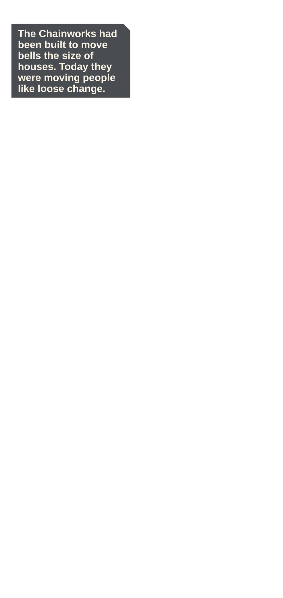
Beat and source
The bell lift opens into vast Chainworks where suspended gears and three broken spans frame a narrow route downward.
experiments/reimaginings/ember-lattice/volume/ch02/source/p001.pngEMBER LATTICE · OWNER REVIEW · FULL
24 continuous panels · 11 action · 397 dialogue words · 4 system moments
Phone reader · Full-size reader · Compact review · Action strip · Diagnostics

The bell lift opens into vast Chainworks where suspended gears and three broken spans frame a narrow route downward.
experiments/reimaginings/ember-lattice/volume/ch02/source/p001.png
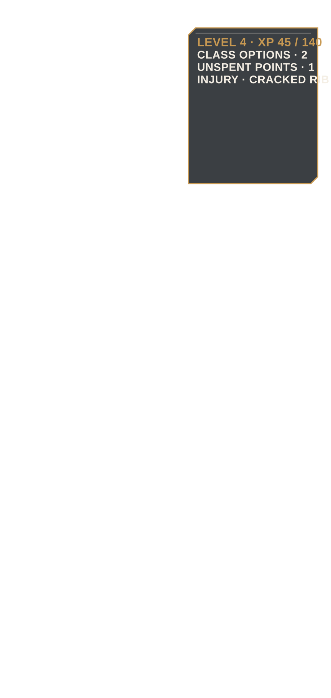
Elian's L4 status and two class paths appear beside his injured stance, with XP and class prerequisites clearly visible.
experiments/reimaginings/ember-lattice/volume/ch02/source/p002.png
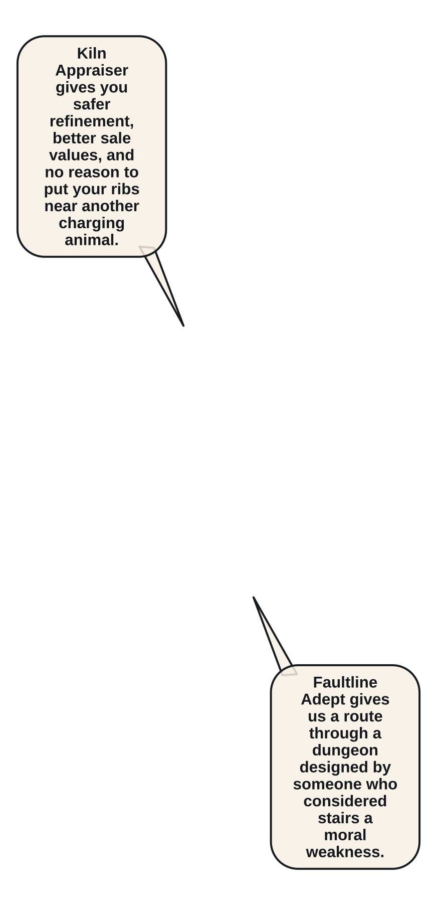
Mira compares the Appraiser's safety to the Adept's combat risk while tightening Elian's rib binding.
experiments/reimaginings/ember-lattice/volume/ch02/source/p003.png
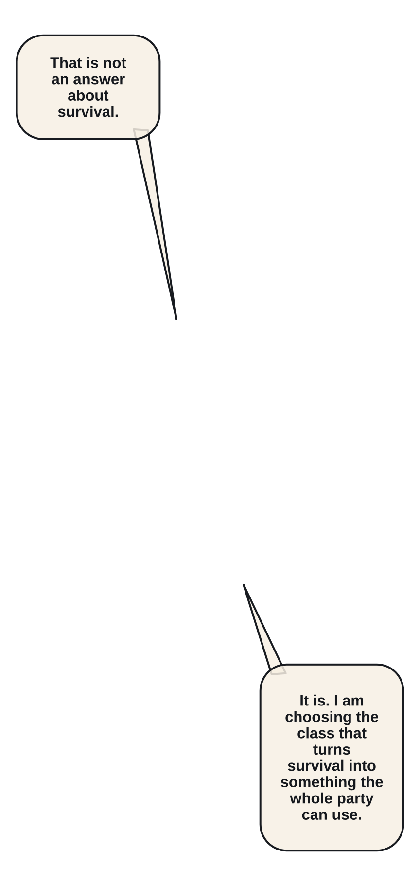
Elian binds the Cinder-Key into the Faultline Adept seal; one ember fracture motif crosses his short coat.
experiments/reimaginings/ember-lattice/volume/ch02/source/p004.png
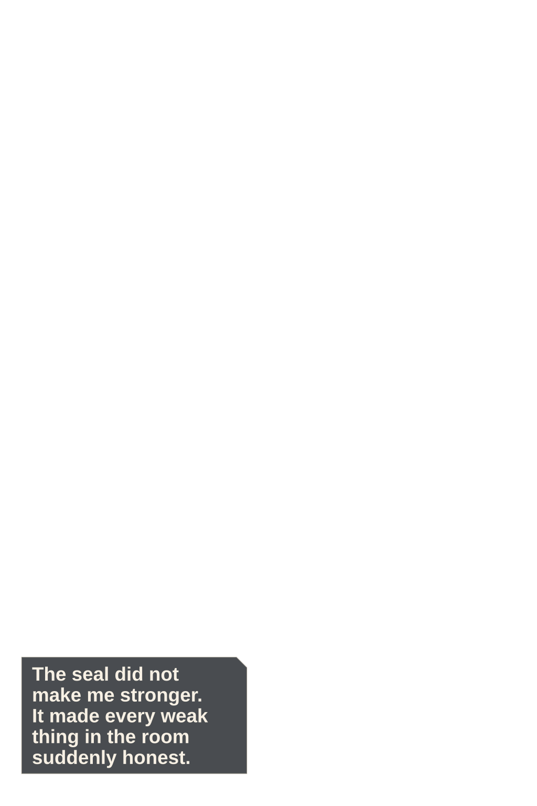
A quiet close-up shows his hookblade hand settling into a lower diagonal class stance.
experiments/reimaginings/ember-lattice/volume/ch02/source/p005.png
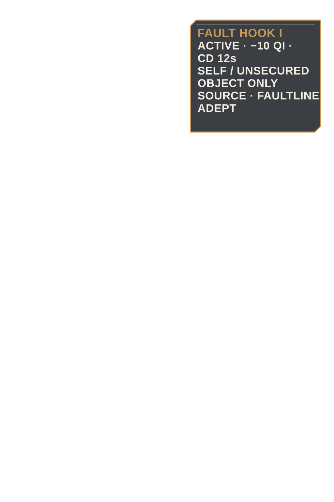
Fault Hook I appears as a narrow skill card with cost, cooldown, legal targets, and acquisition source.
experiments/reimaginings/ember-lattice/volume/ch02/source/p006.png
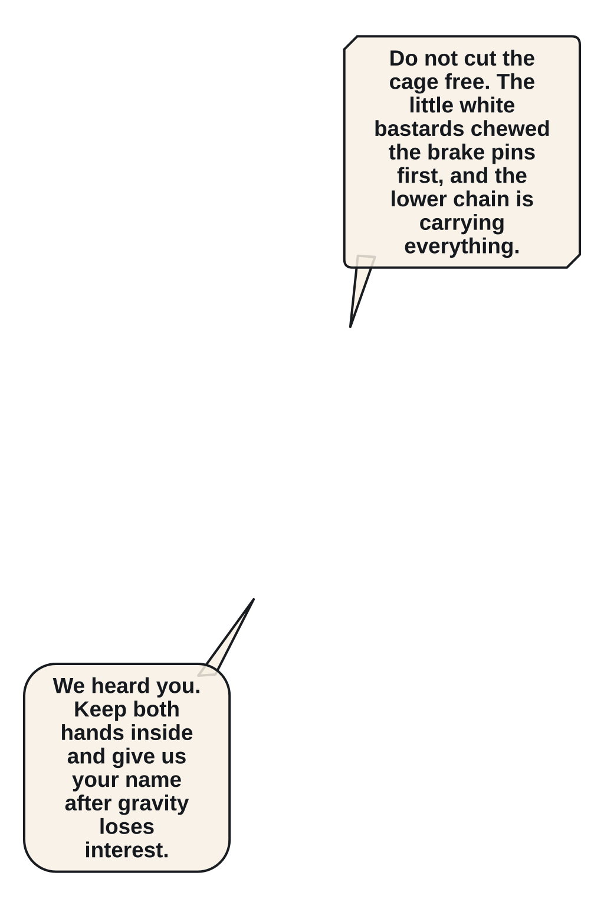
A trapped adult delver calls from a dangling maintenance cage while a rescue quest opens.
experiments/reimaginings/ember-lattice/volume/ch02/source/p007.png

Three ivory Cinder Mites sever the cage chain pins and race along separate links.
experiments/reimaginings/ember-lattice/volume/ch02/source/p008.png

Wide geography fixes the cage below, Mira on the central beam, Elian above, and the mites moving toward the final pin.
experiments/reimaginings/ember-lattice/volume/ch02/source/p009.png

Mira wedges her split shield under the cage chain and bears its weight.
experiments/reimaginings/ember-lattice/volume/ch02/source/p010.png

Elian reads the single pin that carries the cage and marks the safe chain fault above it.
experiments/reimaginings/ember-lattice/volume/ch02/source/p011.png

A mite cuts the marked chain early, dropping the cage and reversing Elian's plan.
experiments/reimaginings/ember-lattice/volume/ch02/source/p012.png

Elian fires Fault Hook into the overhead fault, pulling his own body across the falling gap.
experiments/reimaginings/ember-lattice/volume/ch02/source/p013.png

He swings beneath the beam with the hookblade held clear of the rescued delver.
experiments/reimaginings/ember-lattice/volume/ch02/source/p014.png

Elian catches the cage latch as Mira redirects its weight into her shield anchor.
experiments/reimaginings/ember-lattice/volume/ch02/source/p015.png
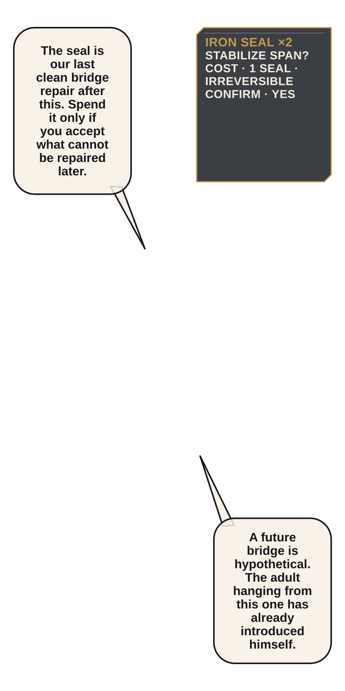
One Iron Seal sits in Elian's open palm beside the unstable span and the unspent second seal.
experiments/reimaginings/ember-lattice/volume/ch02/source/p016.png
He drives the seal into the chain socket; the rescued delver reaches stable footing.
experiments/reimaginings/ember-lattice/volume/ch02/source/p017.png

The mites flee through a vertical gear throat as Elian and Mira chase along rotating chain teeth.
experiments/reimaginings/ember-lattice/volume/ch02/source/p018.png

Fault Step redirects Elian around one turning gear and into the lead mite's path.
experiments/reimaginings/ember-lattice/volume/ch02/source/p019.png

Mira closes the escape with a flat shield strike; the remaining mites collapse in one readable line.
experiments/reimaginings/ember-lattice/volume/ch02/source/p020.png
Three carapaces and a tempered Chainspool lie in a clean loot arrangement.
experiments/reimaginings/ember-lattice/volume/ch02/source/p021.png
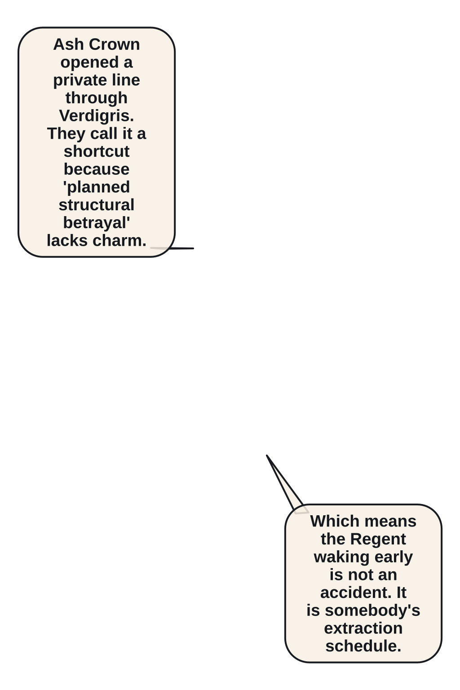
The rescued delver identifies an Ash Crown shortcut and refuses Elian's attempt to call the rescue incidental.
experiments/reimaginings/ember-lattice/volume/ch02/source/p022.png
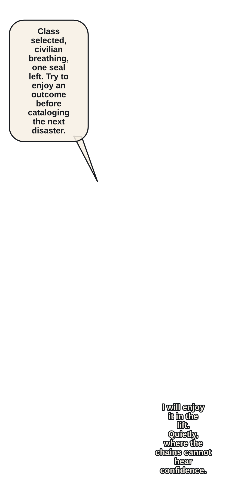
The next bell lift opens toward the Glass Gallery, its pale mineral ribs visible below.
experiments/reimaginings/ember-lattice/volume/ch02/source/p023.png
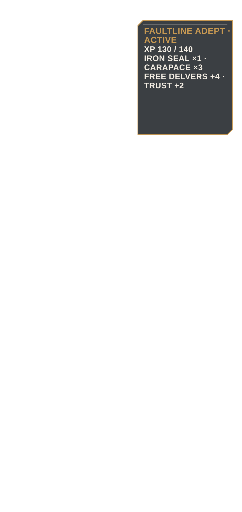
Quest completion, Free Delvers reputation, inventory, and 130/140 XP reconcile in a compact end-state menu.
experiments/reimaginings/ember-lattice/volume/ch02/source/p024.png